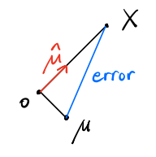
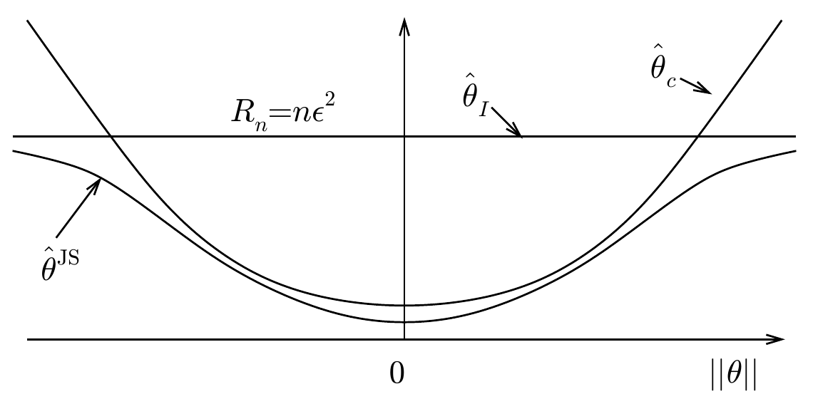
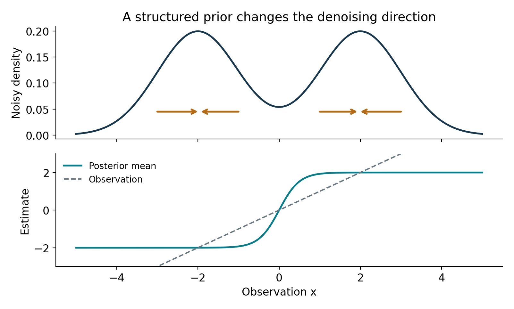
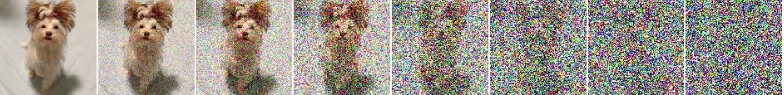
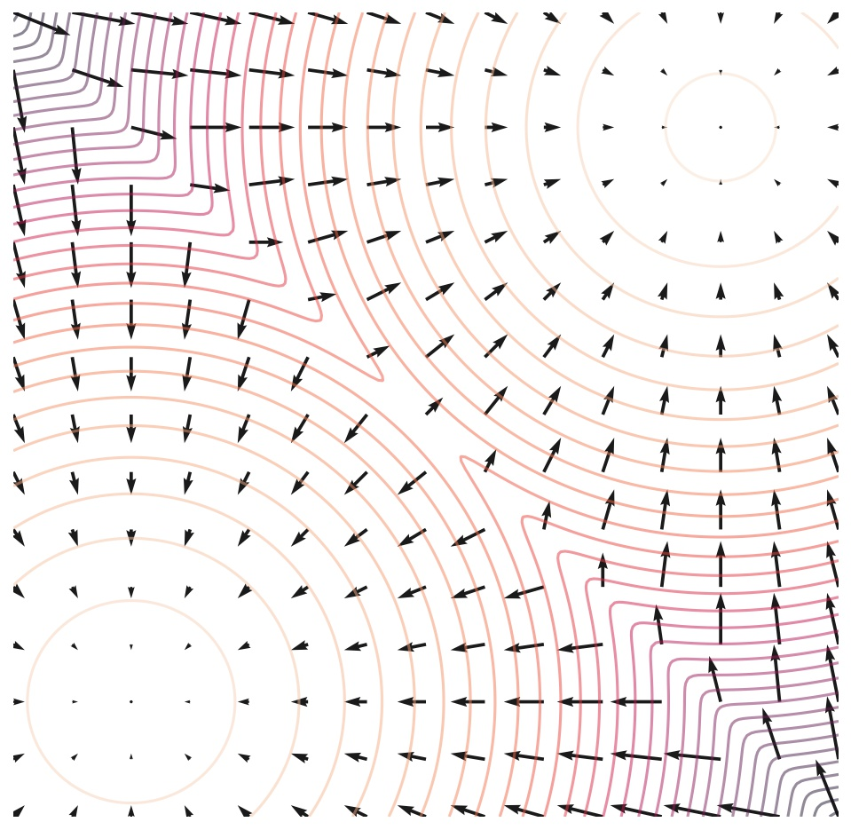

These notes support STAT 709 at the University of Wisconsin–Madison. Use them alongside the cited textbooks; corrections and questions are welcome.
Optional part.
This lecture belongs to optional Part VI and is not examined. Its high, mid and low labels organize a suggested reading path within the optional material; they do not add exam requirements. See the Part VI overview.
Bias. An estimator can be best among unbiased rules and still be improved by allowing bias.
Risk identity. We begin with the risk of fixed shrinkage, then use Stein’s identity to verify the James–Stein improvement in dimension at least three.
Bayesian connection. Tweedie’s formula explains shrinkage through a posterior mean.
Optional connections. Superharmonic constructions and diffusion models are optional connections built on that identity.
Recap from earlier lecturesFrom Lectures 1, 5 and 7: earlier ideas used here · 1 min
Reminder only: this block introduces no new exam requirements.
Bias and variance. Squared-error risk balances squared bias and variance. Used in the fixed-shrinkage comparison.
Gaussian transformations. Rescaling a Gaussian vector rescales its mean and covariance. Used to reduce to unit noise.
Conditional means. The conditional mean minimizes squared prediction error. Used for the Bayes estimator.
Learning goals
Compare fixed shrinkage with the data-dependent James–Stein rule.
Follow the Stein identity calculation and explain why dimension three matters.
Derive a posterior mean from a Gaussian marginal density.
Explore the optional connection between denoising and diffusion models.
1. Motivation
Suppose \(X_1, \ldots, X_n \stackrel{\iid}{\sim} \mathcal{N}(\mu, I_p)\), where \(\mu \in \mathbb{R}^p\) is the unknown parameter. The sample mean is \[\begin{aligned} \bar{X} = \frac{1}{n} \sum_{i=1}^{n} X_i \sim \mathcal{N}(\mu, \frac{1}{n}I_p). \end{aligned}\] Each coordinate of \(\bar X\) is the UMVUE, and in this Normal model the sample mean also attains the Cramér–Rao lower bound. Q: While we have a complete theory for unbiased estimation, what about biased estimation?
For simplicity, consider one observation \[\begin{aligned} X \sim \mathcal{N}(\mu, I_p), \end{aligned}\] otherwise we can rescale \(X = \sqrt{n}\bar{X}\), and \(\sqrt{n}\mu\) replaces \(\mu\).
1.1. A high-dimensional perspective
An initial observation was made by Stein in 1956 [4]. Let \[\begin{aligned} X = \mu + Z, \text{ where } Z \sim \mathcal{N}(0, I_p). \end{aligned}\] Then, when \(p\) is large, we have \[\begin{aligned} \|X\|^2 = \|\mu\|^2 + \|Z\|^2 + 2\langle \mu, Z\rangle \approx \|\mu\|^2 + p, \end{aligned}\] The mean and variance make this heuristic precise: \[\E\|X\|^2=\|\mu\|^2+p,\qquad \operatorname{Var}(\|X\|^2)=2p+4\|\mu\|^2.\] The cross covariance vanishes because centered Gaussian third moments are zero. Chebyshev’s inequality now gives \(\|X\|^2/(\|\mu\|^2+p)\to_p1\) as \(p\to\infty\), even if \(\mu\) varies with \(p\). In particular, if \(p\gg\|\mu\|^2\), then

\[\begin{aligned} \|X\| \gg \|\mu\| \qquad \text{with high probability}, \end{aligned}\] since large variances are accumulated across \(p\) coordinates.
This leads to attempts to improve the natural unbiased estimator—shrinking the norm and obtaining a biased estimator \(\hat{\mu}\).
1.2. Bias-variance tradeoff perspective
From statistical decision theory, the risk function under the squared loss (MSE) of an estimator \(T\) is \[\begin{aligned} R_T(\mu) = \mathbb{E}[\|T(X) - \mu\|^2]. \end{aligned}\] where the expectation \(\mathbb{E}\) is based on \(\mathcal{N}(\mu, I_p)\).
A homework problem.
Consider a loosely related problem. In the homework problem, we have observations \(X_1, \ldots, X_n \stackrel{\iid}{\sim} \text{Bernoulli}(p)\), where the UMVUE is the sample mean \(\bar{X}\) with \[\begin{aligned} R_{\bar{X}}(p) = \frac{p(1-p)}{n}. \end{aligned}\] The risk is highest at \(p=1/2\). Another simple estimator is the constant estimate \(1/2\), which has the lowest risk at \(p=1/2\) but highest at \(0\) and \(1\).
We can “even out” the risk by interpolating the two estimators: shrinking \(\bar{X}\) towards the midpoint \(\frac{1}{2}\), trading bias around endpoints for smaller variance around the midpoint, which arrives at the minimax risk estimator \[\begin{aligned} T_0(X) = \frac{\sqrt{n}}{\sqrt{n}+1} \bar{X} + \frac{1}{2(\sqrt{n} + 1)}. \end{aligned}\] We can calculate the risk. \[\begin{aligned} &~~~\E \Big[\big( \frac{\sqrt{n}}{\sqrt{n}+1} \bar{X} + \frac{1}{2(\sqrt{n} + 1)} - p \big)^2 \Big] \\ &= \underbrace{\frac{1}{(\sqrt{n}+1)^2} p(1-p)}_{\text{variance}} + \underbrace{\frac{(p - 1/2)^2}{(\sqrt{n}+1)^2}}_{\text{bias}^2} \\ &= \frac{1}{4(\sqrt{n}+1)^2}. \end{aligned}\]
Constant risk. The risk is constant over \(p\).
A matching prior. To verify minimaxity, put a \(\operatorname{Beta}(\sqrt n/2,\sqrt n/2)\) prior on \(p\): its posterior mean is exactly \(T_0\).
Lower bound. Any estimator’s maximum risk is at least its average risk under this prior, and that average risk is minimized by \(T_0\).
Attainment. Since \(T_0\) has constant risk, it attains this lower bound. This uses the posterior-mean principle from Lecture 5. Minimaxity will be studied in detail in STAT 710.
Beating the constant risk.
In our Gaussian mean estimation, the natural unbiased estimator \(X\) already has constant risk over all \(\mu \in \R^p\).
Consider an estimator of the form \(\hat{\mu} = (1-\veps) X\) where \(\veps \in (0,1)\). The risk function is \[\begin{aligned} \mathbb{E}[\|\hat{\mu} - \mu\|^2] = \underbrace{\veps^2\|\mu\|^2}_{\text{Bias}^2} + \underbrace{(1-\veps)^2p}_{\text{Variance}}. \end{aligned}\] For each fixed \(\mu\) and \(p\), a small amount of shrinkage reduces risk: \[R_{\hat\mu}(\mu)=(1-2\veps)p+\veps^2(\|\mu\|^2+p).\] Thus, shrinkage is advantageous if we can choose the correct \(\veps\). To determine the optimal \(\veps\), we solve \[\begin{aligned} \min_{\veps\in[0, 1]} \left\{\veps^2\|\mu\|^2+ (1-\veps)^2 p\right\} \quad \Longrightarrow \quad \veps^* = \frac{p}{\|\mu\|^2 + p}. \end{aligned}\] Unfortunately, we don’t know \(\| \mu\|\) as it involves the unknown \(\mu\). Nevertheless, we only need to estimate the norm reasonably well instead of estimating the \(p\)-dimensional \(\mu\).
A heuristic is to use the high-dimensional intuition: if \(p\) is sufficiently large, \[\begin{aligned} \|\mu\|^2+p \approx \|X\|^2. \end{aligned}\] so we can use \(\|X\|^2\) to estimate \(\|\mu\|^2 + p\). The James–Stein estimator optimizes the factor and achieves a smaller risk function in dimension as small as \(p=3\).
Bias can lower risk.
For \(X\sim N(\mu,I_p)\), constant shrinkage \(aX\) has risk \(a^2p+(1-a)^2\|\mu\|^2\). Reduced variance can outweigh squared bias, but a fixed \(a\) below one cannot dominate \(X\) over all means.
See Exercise 1 in Section 7 for the full statement and complete solution.
2. Shrinkage estimators
For \(X\sim N(\mu,I_p)\), constant shrinkage \(aX\) has risk \(a^2p+(1-a)^2\|\mu\|^2\). Reduced variance can outweigh squared bias, but a fixed \(a\) below one cannot dominate \(X\) over all means.
For \(p\ge3\), the James–Stein estimator and its improvement are defined by \[\begin{aligned} \hat{\mu}_{\mathrm{JS}} = \left(1 - \frac{p-2}{\|X\|^2}\right)X,\qquad \hat{\mu}_{\mathrm{JS}+} = \left(1 - \frac{p-2}{\|X\|^2}\right)_+X. \end{aligned}\] We can actually choose a nonzero center. More generally, given a fixed, data-independent \(c\in\R^p\),
\[\hat{\mu}_{\mathrm{JS}} = \left(1 - \frac{r(p-2)}{\|X - c\|^2}\right)(X - c) + c,\quad \hat{\mu}_{\mathrm{JS}+} = \left(1 - \frac{r(p-2)}{\|X - c\|^2}\right)_+(X - c) + c.\]
(1)Strong signal. We interpret this result from the signal vs. noise perspective. If we believe signal strength relative to the center, \(\|\mu-c\|^2\), is large as evidenced by large \(\|X-c\|^2\), then we shrink less, to avoid pulling a strong signal too far toward the center.
Accumulated noise. On the other hand, if dimension \(p\) is large, then there is more accumulated noise, so we need stronger shrinkage.
If \(\hat{\mu}\) is either of the two shrinkage estimators in Equation 1, then for any \(r \in (0, 2)\), when \(p \ge 3\), \[\begin{aligned} R_{\hat{\mu}}(\mu) < R_X(\mu), \qquad \text{for every } \mu \in \R^p. \end{aligned}\] This inequality means that the natural mean estimator \(X\) is inadmissible: another estimator has no larger risk at any mean and smaller risk at some mean (here, at every mean). The comparison concerns total expected squared error, not every observed sample or every coordinate separately. Moreover, for \(\hat \mu = \hat \mu_{\mathrm{JS}}\), we have
\[\begin{aligned} R_{\hat{\mu}}(\mu) = p - (2r-r^2)(p-2)^2 \mathbb{E}[\|X - c\|^{-2}]. \end{aligned}\]
(2)
Stein’s identity.
First, we state one widely used proof component.
If \(g \in C^1(\mathbb{R}^p)\) with \(\E\|\nabla g(Z)\|<\infty\), \(\E|Z_i g(Z)|<\infty\) for every \(i\), and vanishing boundary terms (or a valid cutoff approximation), where \(Z \sim \mathcal{N}(0, I_p)\), then \[\begin{aligned} \mathbb{E}[\nabla g(Z)] = \mathbb{E}[Z g(Z)]. \end{aligned}\]
Proof. For any \(i \le p\), we evaluate \[\begin{aligned} \E[\partial_i g(Z)] &= \int \partial_i g(z) \frac{1}{(2\pi)^{p/2}}e^{-\|z\|^2/2} \; dz = -\int g(z) \frac{1}{(2\pi)^{p/2}}\partial_i e^{-\|z\|^2/2} \; dz \\ &= \int g(z) \frac{1}{(2\pi)^{p/2}}z_i e^{-\|z\|^2/2} \; dz \\ &= \E[Z_i g(Z)] \end{aligned}\] where we used integration by parts in the second equality. ◻
Applying the scalar identity to each component gives its vector-valued version. If \(h:\R^p\to\R^p\) satisfies the same differentiability, integrability and boundary conditions componentwise, then (see Exercise 5)
\[\E[\nabla\cdot h(Z)]=\E[Z^\top h(Z)],\]
(3)where \(\nabla\cdot h(z)=\sum_j\partial_jh_j(z)\) is its divergence. Below, \(g\) denotes a scalar shrinkage factor and \(h\) a vector correction.
Proof of Equation 2.
Without loss of generality, we assume \(c=0\) (why?).
Proof. Let us consider estimators of the form \(X - g(X)X\) where \(g:\R^p\to\R\) is differentiable with the required integrability. We introduce \(Z = X - \mu \sim N(0, I_p)\). Now \[\begin{aligned} R(\mu) &= \mathbb{E}[\|X - \mu - g(X)X\|^2] \\ &= \mathbb{E}[\|Z - g(X)X\|^2] \\ &= p + \mathbb{E}[\|X\|^2g(X)^2] - 2\underbrace{\mathbb{E}[Z^\top Xg(X)]}_{\text{apply Stein's identity}} \\ &= p + \mathbb{E}[\|X\|^2g(X)^2] - 2p\mathbb{E}[g(X)] - 2\mathbb{E}[X^\top \nabla g(X)]. \end{aligned}\] where we applied Stein’s identity (Equation 3) to the map \(z \mapsto (z+\mu)g(z+\mu)\).
Now consider the form \(g(X) = \frac{b}{a + \|X\|^2}\) where \(a,b\ge 0\). We find
\[\begin{aligned} R(\mu) - p &= b^2 \mathbb{E}\big[\frac{\|X\|^2}{(a + \|X\|^2)^2}\big] - 2pb \mathbb{E}\big[\frac{1}{a + \|X\|^2}\big] + 4b \mathbb{E}\big[\frac{\|X\|^2}{(a + \|X\|^2)^2}\big] \end{aligned}\]
(4)\[\begin{aligned} &\le (b^2 - 2pb + 4b) \mathbb{E}[\frac{1}{a + \|X\|^2}], \end{aligned}\]
(5)where we used \[\mathbb{E}\big[\frac{\|X\|^2}{(a + \|X\|^2)^2}\big] \le \mathbb{E}\big[\frac{1}{a + \|X\|^2}\big].\] The equality holds if \(a = 0\). In Equations 4–5 we set \(a = 0\) and \(b = r(p-2)\), which leads to the expression in our target equation (2). ◻
Why the singularity is integrable.
Near the center. For \(p>2\), the Gaussian density is bounded near \(c\), and the radial volume element is proportional to \(\rho^{p-1}d\rho\). Thus \(\rho^{-2}\) is locally integrable because \(\int_0^1\rho^{p-3}d\rho<\infty\); outside the unit ball it is bounded.
Regularize. Apply the smooth risk calculation first with \(a>0\) and then dominated convergence as \(a\downarrow0\).
Probability-zero event. Values assigned at \(X=c\) do not affect risk because this event has probability zero.
The positive part also improves risk.
Where the rules differ. Write \(b=r(p-2)>0\) and translate \(c\) to zero. The ordinary rule equals \(t(R)X\), where \(R=\|X\|\) and \(t(R)=1-b/R^2\). It differs from the positive part only when \(R^2<b\).
Conditional direction. Given \(R\), the conditional direction has density proportional to \(e^{\mu^\top X}\) on the sphere.
Sign of the cross term. Pairing opposite directions shows \(\E[\mu^\top X\mid R]\ge0\): their paired contribution is proportional to \(a\sinh(a)\ge0\).
Loss comparison. On \(R^2<b\), the conditional loss of \(t(R)X\) minus that of zero is \[t(R)^2R^2-2t(R)\E[\mu^\top X\mid R]>0.\] This event has positive probability. Consequently the positive-part rule strictly improves the ordinary rule, completing the dominance claim.
Stein risk identity.
For a sufficiently regular vector function \(h\) and \(X\sim N(\mu,I_p)\), the risk of \(X+h(X)\) is \(p+\E[2\,\operatorname{div}h(X)+\|h(X)\|^2]\). The derivative and integrability conditions matter at the shrinkage singularity.
See Exercise 2 in Section 7 for the full statement and complete solution.
3. Tweedie’s formula
3.1. Bayesian perspective
For a sufficiently regular vector function \(h\) and \(X\sim N(\mu,I_p)\), the risk of \(X+h(X)\) is \(p+\E[2\,\operatorname{div}h(X)+\|h(X)\|^2]\). The derivative and integrability conditions matter at the shrinkage singularity.
Suppose that \(\mu\) has a prior distribution \(\mu \sim \pi\) where \(\pi\) is a density on \(\R^p\) with \(\E_\pi\|\mu\|^2<\infty\). The observation now has conditional density \(X|\mu \sim \mathcal{N}(\mu, I_p)\). The marginal density of \(X\) is \[\begin{aligned} f_X(x) & = \int_{\R^p} f_{X,\mu}(x, \mu) \; d\mu = \int_{\R^p} f_{X|\mu}(x|\mu) \pi(\mu) \; d\mu \\ &= \frac{1}{(2\pi)^{p/2}} \int_{\R^p} e^{-\|x - \mu\|^2/2} \pi(\mu) \; d\mu. \end{aligned}\] Consider a map \(\phi: \R^p \to \R^p\) in order to minimize \(\E[\| \mu - \phi(X)\|^2]\). This MSE is \(\E_{\mu \sim \pi} R(\mu)\), i.e., mean risk function under the prior \(\pi\). Tonelli’s theorem applies to the nonnegative squared loss, giving \[\E[\| \mu - \phi(X)\|^2] = \E_{X} \big\{ \E_{\mu|X} [\| \mu - \phi(X)\|^2] \big\}\] Note that conditioning on \(X = x\), \(\phi(X)\) has a fixed value, so \[\E_{\mu|X=x} [\| \mu - \phi(X)\|^2] \ge \E_{\mu|X=x}[\| \mu - \E_{\mu|X=x} (\mu) \|^2 ]\] i.e., the minimizer of MSE must be the conditional mean of \(\mu\) under the posterior distribution. In order for the equality to hold, we only need to choose \[\phi(x) = \E_{\mu|X=x}(\mu).\] It boils down to deriving \(\E_{\mu|X=x}(\mu)\). Observe \[\begin{aligned} \E_{\mu|X=x}(\mu) = \int_{\R^p} \mu f_{\mu|X=x}(\mu|x) \; d\mu = \frac{\int_{\R^p} \mu f_{X|\mu}(x|\mu) \pi(\mu) \; d\mu}{\int_{\R^p} f_{X|\mu}(x|\mu) \pi(\mu) \; d\mu} \end{aligned}\] where we applied Bayes’ formula to the conditional pdf \(f_{\mu|X=x}(\mu|x)\). Notice the following equality for our case \(X\mid\mu\sim N(\mu,I_p)\). \[\E_{\mu|X=x}(\mu-x) = \frac{\int_{\R^p} (\mu-x) e^{-\|x-\mu\|^2/2}\; \pi(\mu) \; d\mu}{\int_{\R^p} e^{-\|x-\mu\|^2/2}\; \pi(\mu) \; d\mu}= \frac{\nabla f_X(x)}{f_X(x)} = \nabla \log f_X(x).\]
Which derivative. The gradient is with respect to the observation \(x\), not the unknown parameter as in a likelihood score.
Interchange. Differentiation under the integral is valid because Gaussian derivatives times a polynomial are bounded as functions of \(x-\mu\).
Posterior mean. Thus the Bayes estimator under prior \(\pi\) is
\[\phi_\pi(X) = X + \nabla \log f_X(X).\]
(6)From this perspective, shrinkage is a result of a prior \(\pi\) on the unknown mean \(\mu\).
Instructor’s NoteFollow the slope of the noisy density
Tweedie’s formula starts at the observation and adds a correction pointing toward where the noisy data distribution becomes denser. For a centered Gaussian prior that correction points toward zero. A more structured prior produces a direction that depends on the local shape of the density.
Posterior means and marginal scores.
In Gaussian noise, the posterior mean equals the observation plus the noise variance times the gradient of the log marginal density. This score is a data-variable derivative, distinct from a parameter score in likelihood theory.
Discrete priors. Tweedie’s formula also applies to a discrete prior: replace its integrals by weighted sums.
Example. In the symmetric two-point example below, posterior odds are \(e^{4x}\), so \(\E[\mu\mid X=x]=2\tanh(2x)\).
Interpretation. This illustrates why a structured prior need not shrink toward a single center.

See Exercise 3 in Section 7 for the full statement and complete solution.
3.2. Shrinkage from superharmonic functions
Low priority — not examined: Shrinkage from superharmonic functions
Motivation. Tweedie’s formula suggests considering estimators of the form \(X+\nabla\log f(X)\) and placing assumptions directly on a positive function \(f\).
What the construction requires. In this construction, \(f\) need not be a probability density or the marginal density from a prior; the risk calculation stands on its own.
For a twice differentiable function \(f \in C^2(\R^p)\), denote the Laplace operator by \(\triangle f(x) = \sum_{j=1}^p \partial_j^2 f(x)\). We say that a twice differentiable function \(f\) is superharmonic iff \(\triangle f(x) \le 0\) for every \(x \in \R^p\).
Let \(f \in C^2(\R^p)\) take positive values and suppose \(\sqrt{f}\) is superharmonic. Under the regularity conditions \[\E\Big[ \frac{1}{f(X)} \sum_{j=1}^p | \partial_j^2 f(X)| \Big] < \infty, \qquad \E\big[ \| \nabla \log f(X) \|^2 \big] < \infty,\] we have \[\E\big[ \|X + \nabla \log f(X) - \mu \|^2 \big] = p + 4 \E \left[ \frac{\triangle \sqrt{f(X)}}{\sqrt{f(X)}}\right] \le p\]
Exercise 7 supplies the full risk calculation.
The naive estimator \(X\) has constant risk and is a minimax estimator. So this theorem automatically verifies minimaxity for \(X + \nabla \log f(X)\). Moreover, there is a wide class of estimators constructed from superharmonic functions that beat the naive estimator.
If we choose \(f(x)=\|x\|^{-2m}\), then for \(x\ne0\) \[\triangle \sqrt{f(x)} = m \cdot \frac{m+2-p}{\|x \|^{m+2}}.\] Thus, as long as \(m \in (0, p-2]\), \(\sqrt f\) is superharmonic away from zero1. For this function, using the regularization \(\|x\|^2\mapsto a+\|x\|^2\), followed by \(a\downarrow0\), justifies the risk formula when \(p\ge3\), because \(\E\|X\|^{-2}<\infty\). It recovers the JS estimator when \(m = (p-2)/2\).
4. A modern connection: diffusion model
Low priority — not examined: A modern connection: diffusion model
Brownian motion is a continuous Gaussian process with independent increments: over a time interval of length \(h\), its increment has mean zero and covariance \(hI\). The notation \(dW_t\) describes this random forcing on an infinitesimal time scale.

How time flies! Now we have tech companies running gigantic models. Figure 3 shows the idea of generating new images using a diffusion model. Let \(x_0\) represent a randomly sampled image (vectorized pixel values).
Forward process. At each fixed time, with prescribed marginal scales \((\alpha_t)\) and \((\beta_t)\), progressively adding noise to an image \(x_0\): \[x_t = \alpha_t x_0 + \beta_t \veps, \qquad \text{where}~ \veps \sim \mathcal{N}(0, I)\]
Backward process. Starting from a random noise \(\veps\), progressively denoising to generate an image \(x_0\).
The forward process is easy to implement: just adding independent Gaussian noise at each (discrete) time step, for example, \[x_t = x_{t-1} + \sqrt{\sigma_t^2 - \sigma_{t-1}^2} z_t, \qquad \text{or} \qquad x_t = \sqrt{1 - \sigma_t^2}\, x_{t-1} + \sigma_{t} z_t\] where \(z_t\stackrel{\iid}{\sim}\mathcal N(0,I)\). These step parameters determine the marginal scales \(\alpha_t,\beta_t\) above; they are not interchangeable with them. The first schedule requires nondecreasing \(\sigma_t^2\); in the second schedule take \(0<\sigma_t^2<1\) so the following inverse scaling is defined. The critical part is to denoise an image from \(x_t\) to \(x_{t-1}\).

Score function.
Suppose that at time \(t\), the random vectors \(X_{t-1}\) and \(X_t\) are determined by \[X_t = \sqrt{1 - \sigma_{t}^2}\, X_{t-1} + \sigma_t Z_t, \qquad \text{where}~Z_t \sim \mathcal{N}(0,I).\] By Tweedie’s formula, the posterior mean is given by \[\E[X_{t-1} | X_t = x_t] = \frac{1}{\sqrt{1 - \sigma_{t}^2}} x_t + \frac{\sigma_{t}^2}{\sqrt{1 - \sigma_{t}^2}} \underbrace{\nabla \log p_t (x_t)}_{\text{score function}}\]
Learn the score. where \(p_t\) is the pdf of \(X_t\). We don’t know the score function exactly, but estimating it from data gives \(s_{\theta}(x_t,t)\).
Approximation. The following update is a schematic small-step denoising sampler, not an exact finite-step conditional distribution.
Noise schedule. In general the reverse transition is not Gaussian with covariance \(\sigma_t^2I\); a chosen diffusion discretization determines its noise scale.
Start the sampler. It uses the score as follows: starting with \(\bar X_T\sim p_T\), approximated by a simple Gaussian when the terminal noise dominates the signal,
\[\bar X_{t-1} = \frac{1}{\sqrt{1 - \sigma_{t}^2}} \bar X_t + \frac{\sigma_t^2}{\sqrt{1 - \sigma_{t}^2}} s_{\theta}(\bar X_t,t) + \sigma_t Z_t, \qquad \text{where}~t=T, T-1,\ldots,1\]
(7)Unknown target. The score estimate \(s_\theta(x_t,t)\) is obtained from a neural network. The ideal objective compares it with \(\nabla\log p_t\), but that target is unknown.
Observable loss. For the known Gaussian forward marginal \(X_t=\alpha_tX_0+\beta_tZ\), \(\beta_t>0\), a usable denoising objective is \[\min_\theta\E\left[w(t)\left\|s_\theta(X_t,t)+\frac{X_t-\alpha_tX_0}{\beta_t^2}\right\|^2\right].\]
Why it works. The target is the conditional score of \(X_t\mid X_0\). Conditioning on \(X_t\) gives its mean \(\nabla\log p_t(X_t)\); hence least-squares projection shows that this objective differs from weighted marginal-score error only by a constant independent of the network.
Training procedure. Sample a training image, a positive noise time and Gaussian noise, then optimize this observable loss. The weighting \(w(t)>0\) and time range must make the expectations finite. See [2] for a specified sampler and schedule.
Stochastic differential equation*.
The theoretical foundation for diffusion models can be found in [1]. Consider the stochastic differential equation (SDE): \[(\text{forward pass}) \qquad dX_t = f(X_t, t) dt + g(t) dW_t \qquad\qquad\qquad\] where \(X_0\sim p_0\) and \((W_t)_{t \ge 0}\) is the Wiener process (Brownian motion).2 Then, \[(\text{backward pass}) \qquad d\bar X_t = \Big[ f(\bar X_t, t) - [g(t)]^2 \nabla \log p_t(\bar X_t) \Big] dt + g(t) d\bar W_t \qquad\qquad\qquad\]
Time convention. Here \(t\) runs from \(T\) down to \(0\), so \(dt\) is negative, and \(\bar W\) is Brownian noise in the reverse-time parameterization.
Initial law. Start with \(\bar X_T\sim p_T\).
Time reversal. Under the smoothness, nondegeneracy and integrability hypotheses of the time-reversal theorem, this reverse process has marginals \(p_t\) at the corresponding times.
Increasing-time parameter. Equivalently, with increasing time \(s=T-t\), the drift is \(-f(x,T-s)+g(T-s)^2\nabla\log p_{T-s}(x)\). The sign convention and time direction are part of the formula [1, 2].
Low priority — not examined: Practice: Tweedie with general Gaussian noise
See Exercise 4 in Section 7 for the full statement and complete solution.
5. Further reading
Further reading
For an accessible account of Stein risk calculations, see Tibshirani’s Stein notes (with Larry Wasserman). For the posterior-mean identity, see Efron (2011), Equation (1.4). The primary references are [3, 4]. The references for diffusion models are [1, 2].
Key ideas
Fixed shrinkage trades variance against bias; its best amount depends on the unknown mean.
James–Stein uses the observed norm to adapt the shrinkage and improves total risk when the dimension is at least three.
Tweedie’s formula links the posterior mean to the gradient of a noisy marginal density.
The optional diffusion connection uses such scores at several noise levels.
Detailed reference
Detailed reference
For \(X\sim N(\mu,I_p)\), constant shrinkage \(aX\) has risk \(a^2p+(1-a)^2\|\mu\|^2\). Reduced variance can outweigh squared bias, but a fixed \(a\) below one cannot dominate \(X\) over all means. Return to the earlier explanation.
For a sufficiently regular vector function \(h\) and \(X\sim N(\mu,I_p)\), the risk of \(X+h(X)\) is \(p+\E[2\,\operatorname{div}h(X)+\|h(X)\|^2]\). The derivative and integrability conditions matter at the shrinkage singularity. Return to the earlier explanation.
In Gaussian noise, the posterior mean equals the observation plus the noise variance times the gradient of the log marginal density. This score is a data-variable derivative, distinct from a parameter score in likelihood theory. Return to the earlier explanation.
Looking ahead
Lecture 19 asks how to improve shrinkage when the signal is sparse in a useful coordinate system. Thresholding adapts coordinate by coordinate rather than using one radial factor. Continue within optional Part VI.
7. Exercises and complete solutions8 exercises · complete solutions
For \(T_a(X)=aX\), \(0<a<1\), find the set of means for which its squared-error risk is smaller than \(p\).
Reveal solution
The risk is \((1-a)^2\|\mu\|^2+a^2p\). It is less than \(p\) exactly when \((1-a)^2\|\mu\|^2<(1-a^2)p\), or \(\|\mu\|^2<p(1+a)/(1-a)\). No fixed \(a<1\) improves every mean; this motivates a data-dependent shrinkage factor.
Explain rigorously why the James–Stein risk calculation may assume \(c=0\) for a fixed center \(c\).
Reveal solution
Set \(Y=X-c\sim N(\mu-c,I_p)\). The centered rule has form \(c+\delta(Y)\), and its error is \(\delta(Y)-(\mu-c)\). Thus its risk at \(\mu\) equals the zero-center risk at \(\mu-c\). A bound valid for every mean transfers to every fixed center.
If \(\mu\sim N(0,\tau^2I_p)\) and \(X\mid\mu\sim N(\mu,I_p)\), use Tweedie to find the posterior mean.
Reveal solution
The marginal law is \(N(0,(1+\tau^2)I_p)\), so \(\nabla\log f_X(x)=-x/(1+\tau^2)\). Adding this to \(x\) gives \(\tau^2x/(1+\tau^2)\). At \(\tau^2=0\) the limiting prior is a point mass at zero and the estimate is zero.
Low priority — not examined: Tweedie with general Gaussian noise
If \(Y=aU+\sigma Z\) with \(a>0\), \(\sigma>0\), \(\E\|U\|^2<\infty\), and standard Gaussian \(Z\) independent of \(U\), derive \(\E[U\mid Y=y]\) from the density \(p\) of \(Y\).
Reveal solution
Differentiating the Gaussian mixture gives \(\nabla p(y)=\sigma^{-2}p(y)\{a\E[U\mid Y=y]-y\}\). Since the Gaussian convolution has positive density, divide by \(p\) and solve: \(\E[U\mid Y=y]=[y+\sigma^2\nabla\log p(y)]/a\). Differentiation is justified by Gaussian smoothing, with the relevant posterior moments finite.
Prove \(\E[Z^\top h(Z)]=\E[\operatorname{div}h(Z)]\) for a vector field satisfying the coordinate Stein assumptions.
Reveal solution
Apply the scalar identity to \(h_j\) in coordinate \(j\): \(\E[Z_jh_j(Z)]=\E[\partial_jh_j(Z)]\). Sum the \(p\) identities; the finite sum and the assumed integrability permit taking expectations termwise. This yields the displayed divergence identity.
For the ordinary James–Stein rule with \(r=1\) and \(\mu=c\), compute the risk exactly for \(p>2\).
Reveal solution
Here \(Q=\|X-c\|^2\sim\chi_p^2\). Its Gamma density gives \(\E Q^{-1}=\Gamma(p/2-1)/[2\Gamma(p/2)]=1/(p-2)\). The risk formula becomes \(p-(p-2)^2/(p-2)=2\), compared with the unshrunk risk \(p\).
Low priority — not examined: The superharmonic risk identity
Using Stein, prove \(R_{X+\nabla\log f}(\mu)=p+4\E[\Delta\sqrt f(X)/\sqrt f(X)]\) under the stated assumptions.
Reveal solution
For \(h=\nabla\log f\), expand the risk: \(p+\E\|h\|^2+2\E\operatorname{div}h\). The integrand is \(\|\nabla f\|^2/f^2+2\Delta f/f-2\|\nabla f\|^2/f^2=2\Delta f/f-\|\nabla f\|^2/f^2\). Differentiating \(\sqrt f\) gives four times \(\Delta\sqrt f/\sqrt f\) equal to this expression. Superharmonicity makes it nonpositive.
Low priority — not examined: Why constant Normal risk is minimax
Use priors \(\mu\sim N(0,\tau^2I_p)\) to show that the minimax risk for estimating a unit-noise Normal mean is \(p\).
Reveal solution
For every rule, its supremum risk is at least its Bayes risk under any prior. The Gaussian posterior covariance is \(\tau^2/(1+\tau^2)I_p\), so the optimal Bayes risk is \(p\tau^2/(1+\tau^2)\). Letting \(\tau^2\to\infty\) yields the lower bound \(p\). The rule \(X\) has constant risk \(p\), so it attains the bound.
References
Terminology notes
In particular, for \(m=p-2\) it is harmonic away from the origin.↩︎
Brownian motion · Low — not examined
Brownian motion is a continuous Gaussian process with independent increments: over a time interval of length \(h\), its increment has mean zero and covariance \(hI\). The notation \(dW_t\) describes this random forcing on an infinitesimal time scale.↩︎
What changed
October 19, 2026: Corrected notation, wording and cross-references after the course-wide errata review; refreshed the linked HTML and PDF editions.
October 16, 2026: Clarified risk reduction versus error at an individual observation, justified the Bernoulli minimax example, and distinguished a Tweedie-form estimator from a genuine posterior mean. Added optional-part guidance, a backward recap and concise reading summaries. October 17, 2026: Published in optional Part VI with lecture links, student downloads and issue reporting; this material is not examined.
Comments
Discuss an idea or ask a public question. Include a section or exercise number when relevant. For errors in the notes or website, Report an issue.
Public comments use Disqus. Enable JavaScript to load them.
Email the instructor for a private question or if comments are unavailable.